Вопросы
- Стеки. Абстрактный список
- Простые примеры использования абстрактного стека
- Реализация абстрактного стека
- Взаимосвязь между стеками и рекурсией
Абстрактный стек
- Разработка абстрактных типов данных в процессе решения задачи
- Две операции над абстрактным типом данных
- Алгоритм считывания и исправлений
Разработка абстрактных типов данных в процессе решения задачи
abcc←ddde←←←ef←fg, где ← Backspace, получится abcdefg.
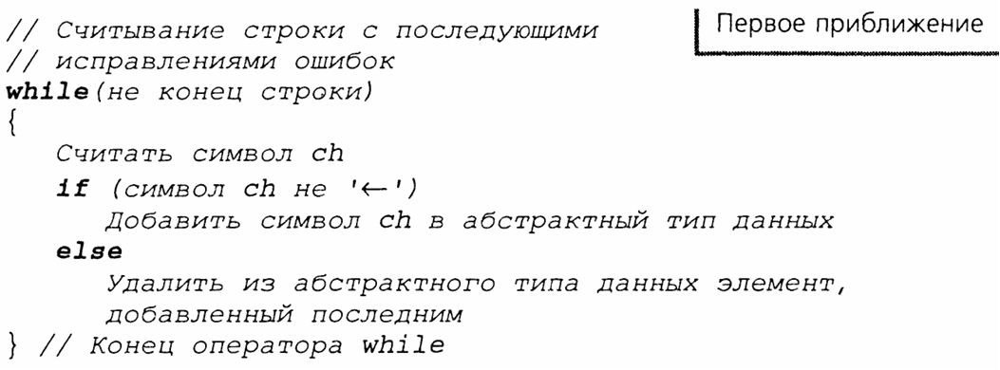
Две операции над абстрактным типом данных
- Добавление нового элемента в АТД
- Удаление из АТД элемента, введённого последним
Алгоритм считывания и исправлений
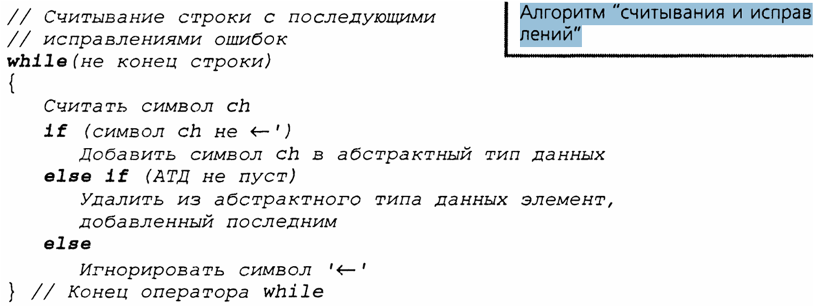
Новая операция над АТД
Определить, пуст ли АТД
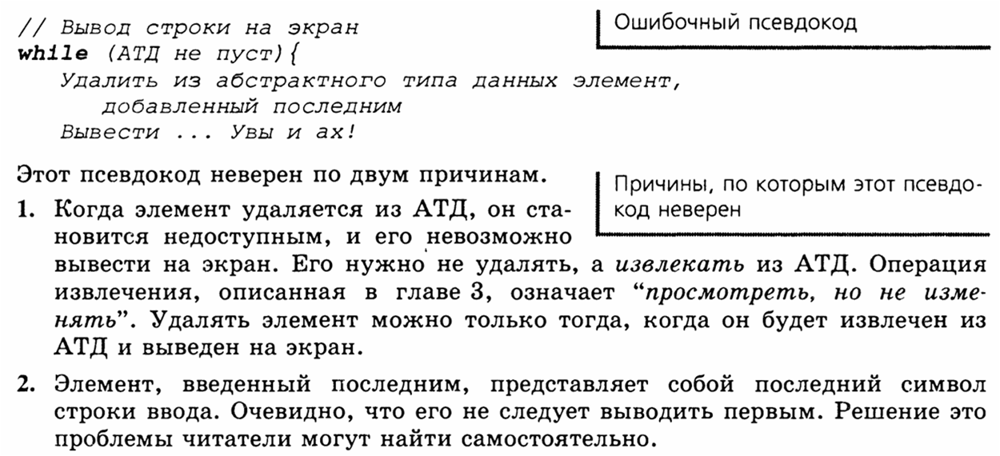
Алгоритм вывода строки, записанной в обратном порядке
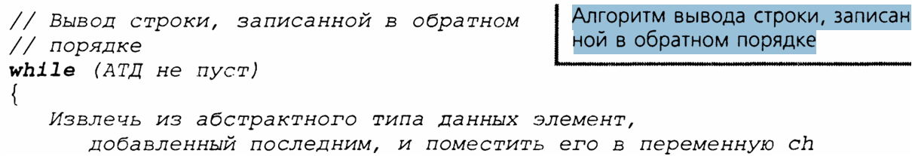
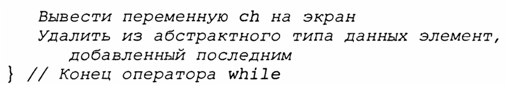
Ещё одна операция над АТД
- Извлечь из абстрактного типа данных элемент, добавленный последним
Основные понятия операции над абстрактным стеком
- Создание пустого стека
- Уничтожение стека
- Определение, пуст ли стек
- Добавление в стек нового элемента
- Удаление из стека элемента, добавленного последним
- Извлечение из стека элемента, добавленного последним
Стек
Обладает одной особенностью — элемент, помещённый в стек последним, удаляется из него первым. Данное свойство часто называют принципом «Последним вошёл — первым вышел» — или просто LIFO (Last in, first out).
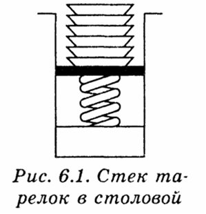
Операции над элементами стека
- Извлечь из стека элемент, вставленный в него последним
- Удалить из стека элемент, вставленный в него последним
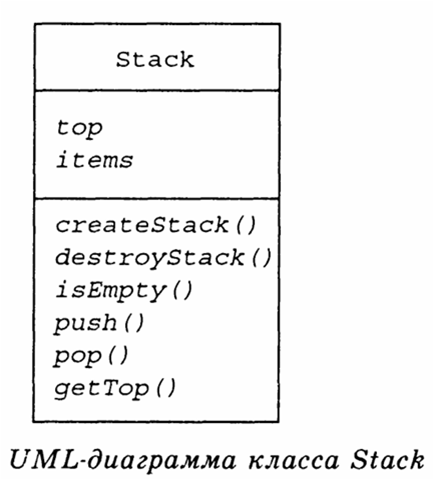
Псевдокод операций над абстрактным стеком
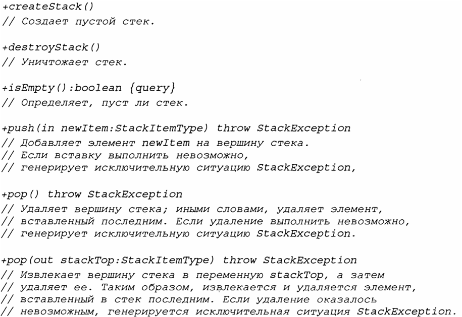
Применение абстрактного стека
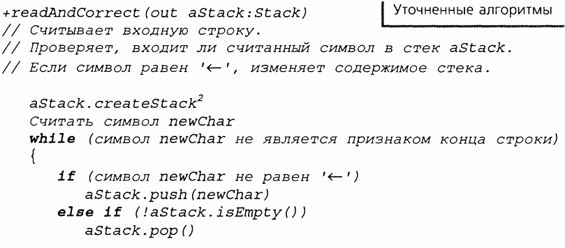
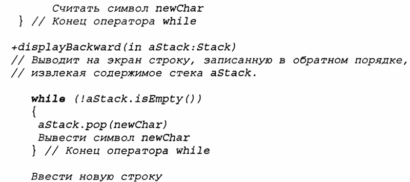
Вопросы, оставленные без ответа неформальными спецификациями
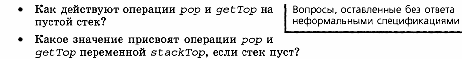
Аксиомы
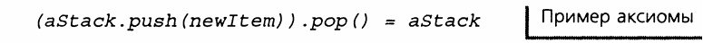
Если новый элемент заталкивается в стек, а затем из него выталкивается, стек не изменяется.
Простые примеры использования абстракного стека
Проверка баланса фигурных скобок
Баланс соблюдён, если выполняются два условия
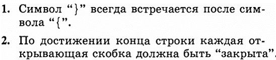
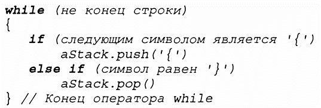
Псевдокод решения, включающий проверку баланса скобок
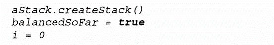
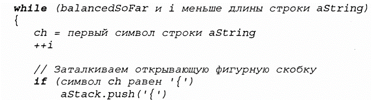
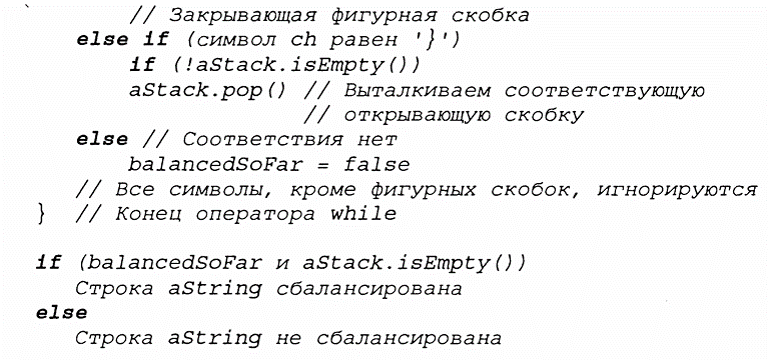
Стеки, возникающие при выполнении алгоритма для разных строк

Распознавание строк языка
Рассмотрим задачу распознавания строки в языке

Алгоритм


3 реализации абстрактного стека

Класс «StackException»


Реализация абстрактного стека в виде массива

Заголовочный файл «StackA.h» абстрактного стека. Реализация в виде массива


Файл реализации «StackA.cpp» абстрактного стека. Реализация в виде массива


Программа, использующая класс «Stack», выглядит следующим образом


- Закрытые данные-члены скрыты от клиентов
- Исключительная ситуация «StackException» предотвращает неправильную работу со стеком
Реализация абстрактного стека в виде связанного списка
Во многих приложениях размеры стека могут динамически увеличиваться и уменьшаться.
На рисунке показана реализация абстрактного стека в виде связанного списка, где указатель «topPtr» ссылается на первый элемент.
Поскольку для связанных списков выделяется динамическая память, класс стека должен иметь конструктор копирования и деструктор.

Заголовочный файл «StackP.h» абстрактного стека. Реализация в виде связанного списка

Файл реализации «StackA.cpp» абстрактного стека. Реализация в виде связанного списка


Конструктор копирования, предусмотренный в этом классе, выполняет глубокое копирование стека
Реализация стека в виде абстрактного списка
- Операцию над стеком «push(newItem)» можно реализовать с помощью операции над абстрактным списком «insert(1, newItem)»
- Операцию «pop()» можно реализовать с помощью операции «remove(1)»
- Операцию «getTop(stackTop)» можно реализовать с помощью операции «retrieve(1, stackTop)»

Заголовочный файл «StackL.h» абстрактного стека. Реализация в виде абстрактного списка

Файл реализации «StackL.cpp» абстрактного стека. Реализация в виде абстрактного списка


В принципе члены класса могут быть экземплярами любого другого класса, отличающегося от определяемого (в этом примере определяемым является класс «stack»)


Сравнение реализаций
- Фиксированный и переменный размеры
- Использование готовых классов экономит время
Конструктор копирования в классе выполняет глубокое копирование стека


Класс «stack» из стандартной библиотеки шаблонов
Упрощенная спецификация класса «stack».
В шаблонном классе «stack» указывается контейнерный класс.
Ключевое слово «explicit» в объявлении конструктора не позволяет использовать вызов конструктора в операторе присваивания.

Пример использования шаблонного класса «stack»

Приложение: алгебраические выражения
- Использование операций над абстрактным типом данных не должно зависеть от его реалзиации
- Чтобы вычислить инфиксное выражение, его сначала нужно преобразовать в постфиксную форму, а затем вычислить полученное постфиксное выражение
Вычисление постфиксных выражений
«2 * (3 + 4)» = «2 3 4 + *»

Алгоритм вычисления постфиксного выражения, заданного строкой символов. Предположения
- Строка представляет собой синтаксически правильное постфиксное выражение
- Унарные операторы не допускаются
- Оператор возведения в степень не допускается
- Операторы задаются строчными буквами
Псевдокод алгоритма имеет следующий вид

Преобразование инфиксного выражения в постфиксное
- Порядок следования операндов никогда не изменяется
- Оператор всегда находится справа от операндов. Иными словами, если в инфиксном выражении операнд «x» предшествовал оператору «op», этот порядок сохранится и в постфиксной форме записи.
- Все скобки удаляются
Первое приближение алгоритма преобразования инфиксного выражения в префиксную форму

Пять этапов преобразования инфиксного выражения в префиксное
Скобки, приоритеты операторов и правила ассоциативности позволяют определить, куда поместить оператор в постфиксном выражении.
- Обнаружив операнд, добавьте его в строку «postfixExp». Обоснование: порядок следования операторов в постфиксном и инфиксном выражениях одинаков, а операнды всегда находятся слева от операторов
- Затолкнуть символ «(» в стек
- Если в момент обнаружения оператора стек оказался пустым, затолкните оператор в стек. Если стек не пуст, вытолкните оттуда операторы более высокого или одинакового приоритета, добавив их в строку «postfixExp». Остановитесь, если обнаружен символ "(" или оператор более низкого приоритета, либо если стек опустел. Затем затолкните новый оператор в стек. Таким образом соблюдается приоритет операторов и правила ассоциативности. Обратите внимание, что выталкивание элементов из стека продолжается до тех пор, пока не обнаружится оператор, имеющий более низкий приоритет, чем текущий. Если операторы имеют одинаковый приоритет, выталкивание элементов продолжается, поскольку это соответствует установленному порядку выполнения операторов. Первым выполняется самый левый оператор — этот оператор уже находится в стеке
- Обнаружив символ «)», вытолкните операторы из стека и добавьте их в конец строки «postfixExp», пока не обнаружится соответствующая открывающая скобка «(». Обоснование: внутри скобок приоритеты и ассоциативность операторов определяется порядком их следования. На этапе 3 операторы уже упорядочены в соответствии с этими правилами
- Достигнув конца строки, добавьте оставшееся содержимое стека в конец строки
Результаты трассировки этого алгоритма на примере выражения «a - (b + c * d) / e»
В результате выполнеиня алгоритма строка содержит постфиксное выражение «abcd*+e/-»

Псевдокод алгоритма, преобразующего инфиксное выражение в постфиксное


Приложение: поиск
- Рассмотрим примененеие стеков при решеении абстрактной задачи поиска (search problem)
- Конкретным примером задачи поиска является, например, вычисление пути из одной точки в другую
- Эту задачу можно решить с помощью стеков и рекурсии
- Рекурсивное решение этой задачи позволяет выявить тесную связь между стеками и рекурсией
Существует ли маршрут из одного города в другой
Будем предполагать, что вся информация о полетах содержится в трёх текстовых файлах
- Названия городов, в которые летают самолеты авиакомпании «HPA»
- Пары названий городов, соединенных рейсами компании «HPA» (пункт от правления — пункт назначения)
- Пары названий городов, для которых заказан полет (пункт отправления — пункт назначения)
Представление данных

Итеративное решение с помощью стеков
Возможные стратегии полного перебора
- Пункт назначения достигнут — искомый маршрут существует
- Рейс заканчивается в городе «C», из которого авиакомпания вылеты не совершает
- Произошло зацикливание. Например, из города «Q» в — «C2», из — «C2» в — «C3» и из — «C3» в — «Q». Эти перелёты могут быть бесконечными, иными словами, алгоритм содержит бесконечный цикл
Откат в город «P» и последующий перелёт в город «W»

Псевдокод разработанного алгоритма


Инвариант цикла «while» имеет следующий вид
Стек содержит направленный путь из пункта отправления, имя которого находится на дне стека, в пункт назначения, название которого расположено на вершине стека.
Откат, если на карте не осталось городов, в которых мы не были
- Стратегия отката сводится к следующему: назад нужно возвращаться лишь тогда, когда нет возможности двигаться вперёд
- Следовательно, откат нужно выполнять только тогда, когда на карте не осталось городов, где мы ещё не побывали
Две причины, по которым не следует возвращаться в прежние места

Второй вариант псевдокода


Окончательный вариант алгоритма поиска


Трассировка алгоритма поиска рейса по карте

Операции над картой рейсов


Реализация функции «searchS» на языке «C++»


Рекурсивное решение

Возможные исходы рекурсивной стратегии

Уточнение алгоритма рекурсивного поиска

Фрагмент карты полётов

Реализация алгоритма «searchR»

Взаимосвязь между стеками и рекурсией

Алгоритм «searchS» выполняет откат, явно выталкивая название города из стека

Для реализации рекурсивных функций используется стек
- Каждый рекурсивный вызов генерирует новую запись активации, которая заталкивается в стек
- Стеки можно применять и в итеративных реализациях рекурсивных алгоритмов
Резюме
- Операции над абстрактным стеком основаны на принципе «последним вошёл — первым вышел» («LIFO»)
- Одним из наиболее важных приложений стеков являются алгоритмы вычисления алгебраических выражений. Принцип «LIFO» лучше всего соответствует природе алгоритма вычисления постфиксных выражений. Кроме того стеки применяются для преобразования инфиксных выражений в постфиксные, что позволяет отменить приоритеты операторов, правила ассоциативности и не использовать скобки
- Стек можно применять для решения задачи о поиске пути из одного города в другой. В стеке можно хранить последовательность посещенных городов. Кроме того стеки позволяют легко выполнять откат. Однако вывести на экран маршрут из одного города в другой нелегко, поскольку название пункта отправления оказывается на дне стека, а пункт назначения — на вершине
- Между рекурсией и стеками существует тесная связь. Большинство реализаций рекурсии основано на стеках активационных записей, которые очень похожи на блок-схемы
Предупреждения
- Если стек пуст, операции «getTop» и pop должны выполнять разумные действия. Например, они могут генерировать исключительную ситуацию «StаскЕхсерtion»
- Алгоритмы вычисления инфиксных выражений или преобразования их в постфиксные должны распознавать операнды. Для этого достаточно учесть приоритеты операторов и правила их ассоциативности, проигнорировав скобки
- При поиске последовательности перелётов из одного города в другой следует учесть возможность ошибочного выбора. Например, алгоритм должен выполнять откат из тупика и предотвращать зацикливание